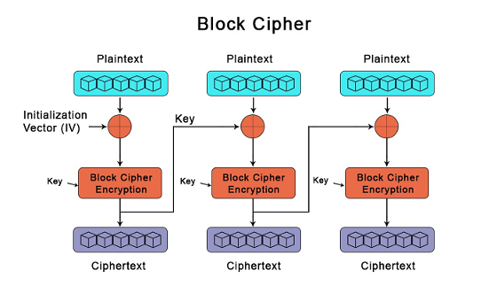

Por ejemplo, en el caso de AES (Advanced Encryption Standard), el tamaño del bloque es de 128 bits.
Esta función de cifrado puede ser un algoritmo como DES (Data Encryption Standard) o AES.
AES, por ejemplo, es ampliamente utilizado y se considera seguro cuando se utiliza con claves suficientemente largas.
Existen dos principales estructuras:
Existen cinco modos de operación (clásicos):
Ademas existen modos autenticados:
Nota: hoy se prefieren modos autenticados (AEAD) como GCM o CCM para obtener confidencialidad + integridad.
Algunos de los algoritmos de cifrado de bloques más comunes son:
Algoritmos Más Usados y Seguros:
*Finalistas de la competencia AES, pero menos usados.
Algoritmos Menos Usados y Rotos:
Algoritmos Modernos para IoT y Sistemas Embebidos: